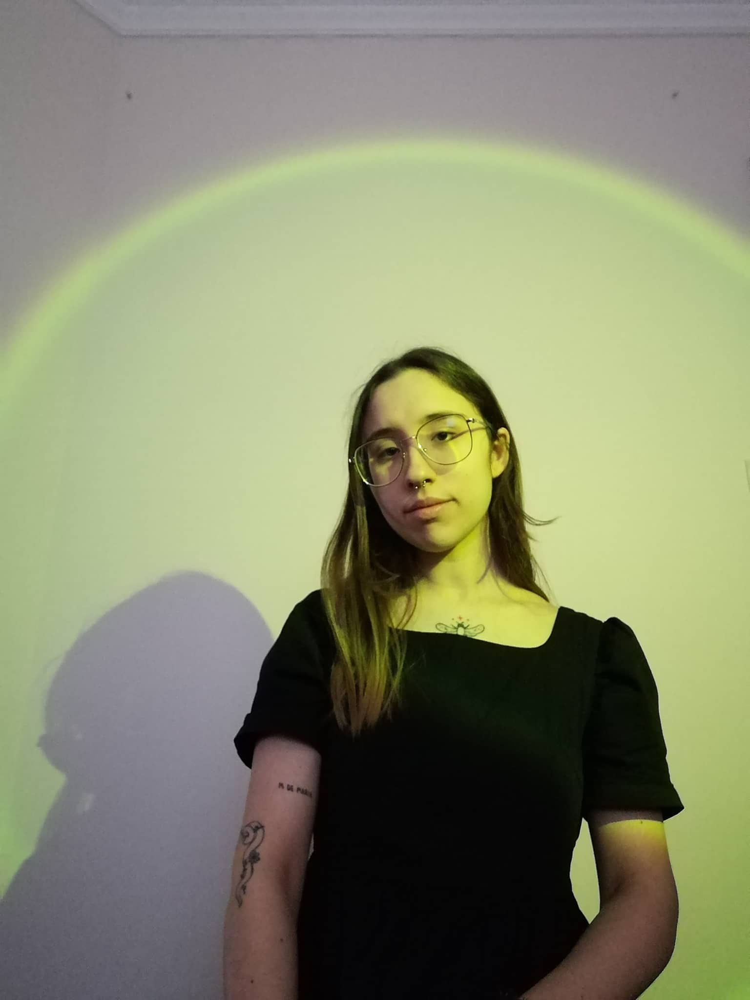

A Marialface é um site
de receitas saudáveis, 100% á base vegetal, com o objetivo de ser uma inspiração para uma vida mais
saudável e consciente.

Maria Gomes
Olá, o meu nome é Maria Gomes e tenho anos. Sou vegetariana à anos e sempre adorei
partilhar as minhas receitas, de forma a mostrar a variedade de comidas saborosas, que uma vida
à base vegetal consegue ter.
ABCulinária
Um Challenge criado por mim, de forma a dar uma receita a cada letra do abecedário.